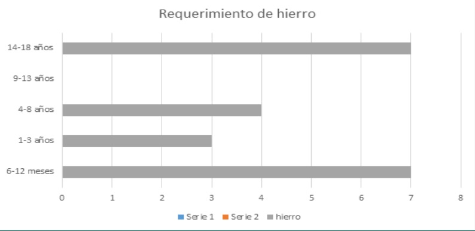

Curso:Gerenciando el proceso de innovación
Docente:Luis Peña
Pablo Moreno
Integrantes:
Fernando Zavala Guevara
León Camarena Luis Enrique
Jason Jose Chambe Lopez
Renzo Luna Aliaga
Definión del problema:
Efectos de la anemia
Se sabe que la carencia de hierro afecta negativamente el desarrollo cerebral, debido a que dicho proceso depende de enzimas y proteínas que contienen hierro (1). Se conoce mucho de los mecanismos de los efectos a largo plazo de la anemia y la deficiencia de hierro. EFECTO DE DESARROLLO MOTOR El área motora se relaciona a la habilidad de los niños para controlar el movimiento de sus músculos, clasificándose en habilidades motoras finas y gruesas. El desarrollo motor del niño es el resultado de muchos factores, propios del niño y otros de su entorno, siendo un riesgo muy importante la presencia de anemia durante el período crítico de los primeros años o meses de vida (2). EFECTOS DE LA ANEMIA EN LA CONDUCTA La conducta socioemocional es otra importante área para el desarrollo infantil, y comprende el establecimiento de relaciones con otras personas usando sus emociones, como la regulación de sí mismo (2).

Anemia
Es un trastorno en el cual el número de glóbulos rojos o eritrocitos circulantes en la sangre se ha reducido y es insuficiente para satisfacer las necesidades del organismo. En términos de salud pública, la anemia se define como una concentración de hemoglobina por debajo de dos desviaciones estándar del promedio según género, edad y altura a nivel del mar (norma técnica 134) Al principio, la anemia puede ser leve y pasar inadvertida. No obstante, los síntomas empeoran a medida que la anemia empeora, algunos correctores por altura,según el doctor Gustavo Gonzalez.a anemia puede ser empeorada si hay un aumento de hierro, este aspecto no es tomado en cuenta en los correctores de hemoglobina en las alturas y por ende las estadísticas están mal elaboradas.Por otro lado la doctora Delia Haustein pide constantemente cuidar de la anemia a los menores de 2 años, ya que si se le descuida a esa cierta edad es probable que cuando sea adulto pierda sus habilidades.
Requerimiento de hierro
El muy reconocido doctor sugiere respetar el cuadro que acba de mejora últimamente.
Medición
Nos enfocamos en un determinado grupo de menores de edad , ya que estos son más propensos. Datos alarmantes.Es elevada a los 6 meses de edad. •Afecta al 60% de los niños 6-18 meses de edad. • A partir de 3 años se reduce significativamente Prevalencia de anemia infantil de 6 a 59 m en diversos países OMS – 2011 Anemia en Mujeres en Edad Fértil Perú - 2015 Nacional 20.7% Urbano 20.8% Rural 20.3% Otros países: OMS 2011 México 14% Canadá: 16% Finlandia 17% Alemania 18% Colombia 19% Ecuador 24% Bolivia: 32% India 48% Burkina Faso 48% Pakistán 51%
Mapa de Valor y Perfil de cliente
A continuación cuando usted vea nuestros cuadros se percatrá que nos enfocamos en examinar a un grupo determinado, tales como: niños, madres gestantes,médicos y el estado.

Prevalencia de anemia en regiones:
Segun investigaciones poco recientes, la selva tiene cuadro preocupantes de anemia, en comparación con la regiones de la selva y sierra.

COMPARACIÓN DE ESTÁNDARES (STI) (ESTÁNDARES INTERNOS)
Palti et al. (1985), en un estudio para Israel, encuentran evidencia de los efectos de largo plazo de la anemia por deficiencia de hierro, al comparar los resultados en pruebas de inteligencia aplicadas a niños de 10 años de edad que padecieron de anemia en los primeros meses de vida y niños que no. Específicamente, este estudio encuentra que los niños con anemia durante sus primeros nueve meses, a la edad 10 a 13 años, tenían en dichas pruebas 2,2 puntos menos que los niños que no la tuvieron.Más aún, estudios como Walter et al. (1989, 1990) encuentran que a pesar de curarse la anemia luego del primer año, el efecto negativo en el desarrollo cognitivo no se revierte, pues los niños que padecieron de anemia siguen teniendo menores puntajes en las pruebas de desarrollo cognitivo con relación a los niños que no la padecieron.
Prevalencia de anemia en regiones:
Segun investigaciones poco recientes, la selva tiene cuadro preocupantes de anemia, en comparación con la regiones de la selva y sierra.
COMPARACIÓN DE ESTÁNDARES (STI) (ESTÁNDARES INTERNOS)
Palti et al. (1985), en un estudio para Israel, encuentran evidencia de los efectos de largo plazo de la anemia por deficiencia de hierro, al comparar los resultados en pruebas de inteligencia aplicadas a niños de 10 años de edad que padecieron de anemia en los primeros meses de vida y niños que no. Específicamente, este estudio encuentra que los niños con anemia durante sus primeros nueve meses, a la edad 10 a 13 años, tenían en dichas pruebas 2,2 puntos menos que los niños que no la tuvieron.Más aún, estudios como Walter et al. (1989, 1990) encuentran que a pesar de curarse la anemia luego del primer año, el efecto negativo en el desarrollo cognitivo no se revierte, pues los niños que padecieron de anemia siguen teniendo menores puntajes en las pruebas de desarrollo cognitivo con relación a los niños que no la padecieron.
COMPARACIÓN DE ESTÁNDARES (STE) (ESTÁNDARES EXTERNOS)
1)Argentina . por Drake y Bernztein (2009) se tiene que ellos encontraron que los.costos equivalentes al 0,77% del PBI del 2005, que es un porcentaje superior al 0,62% hallado aquí. Estos autores encuentran que el costo de la anemia por pérdida cognitiva es equivalente al 0,38% de su PBI per cápita, el cual se compara con el 0,33% que se estimó para el Perú. Estas diferencias con el caso argentino se pueden explicar por el hecho de que masa salarial es más grande en ese país que en el Perú; es decir, que la importancia del costo de la anemia es más grande porque la masa salarial es más grande en la economía. La prevalencia es ligeramente inferior en las mujeres no embarazadas que en las embarazadas. En el mundo hay un total de 468,4 millones de mujeres no embarazadas con anemia (prevalencia mundial del 30,2%). Mortalidad infantil y neonatal Según la ENDES 2013, la mortalidad infantil (niños menores de un año) aumentó, como promedio nacional, de 17 por cada 1,000 nacidos vivos en 2012 a 19 por 1,000 en 2013. El año 2012 había subido de 16 por 1,000 a 17 por cada 1,000 nacidos vivos.La tasa de mortalidad infantil en el área urbana es 16 por cada 1,000 nacidos vivos, mientras a nivel rural es 24 por 1,000 nacidos vivos. En ambos casos la mortalidad se ha elevado en el año 2013 (en la zona urbana de 14 a 16 por 1,000 y en la rural de 22 a 24 por 1,000). PRIMERA ESTIMACIÓN: Perú alcanzó aproximadamente los S/. 2 77 mil millones en el periodo 2009-2010. Este costo representa el 0,62% del PBI nacional. Preguntas: ¿ Por que crees que deba hacerse la modificacción de hemoglobina en las alturas, mientras que otros doctores dicen que no debe hacerse esto? ¿De que manera buscan modificar el test hemoquiu, ya que este presenta margen de error? ¿Cual es la relación entre la ferritina y la evaluación de anemia? Bibliografia https://www.google.com.pe/search?q=mapa+de+valor+marketing&tbm=isch&tbo=u&source=univ&sa=X&ved=2ahUKEwiBjKWq07ndAhVCSN8KHTq5DuEQsAR https://www.mayoclinic.org/es-es/diseases-conditions/anemia/symptoms-causes/syc-20351360 https://www.natursan.net/que-es-el-acido-acetilsalicilico-y-para-que-sirve-dosis-y-riesgos/ https://peru21.pe/economia/oms-44-ninos-anemia-peru-380301 https://peru21.pe/mundo/cerca-22-5-millones-ninos-anemia-latinoamerica-caribe-57964 https://inversionenlainfancia.net/blog/entrada/noticia/2249 https://www.pqs.pe/economia/conoce-nuevo-perfil-consumidor-mamas-peruanas https://comercioyjusticia.info/blog/negocios/marketing/definen-el-perfil-consumidor-de-las-madres-actuales/ https://www.ncbi.nlm.nih.gov/pubmed/?term=Iron+and+Neurodevelopment+Vall%C3%A9e+L. (1) Frongillo EA, Tofail F, Hamadani JD, Warren AM, Mehrin SF. Measures and indicators for assessing impact of interventions integrating nutrition, health, and early childhood development. Ann N Y Acad Sci. 2014 https://www.ncbi.nlm.nih.gov/pubmed/24372533 (2) Alberto Rubín Martín. 10 Graves Consecuencias de la Anemia en Niños y Adultos. 2017, de liferder.com https://www.lifeder.com/consecuencias-de-la-anemia/ (3) runners.es. Cómo leer un análisis de sangre. 2012, de RUNNER'S WORLD https://www.runners.es/salud/lesiones/articulo/como-leer-un-analisis-de-sangre http://www.who.int/vmnis/database/anaemia/anaemia_status_summary/es/